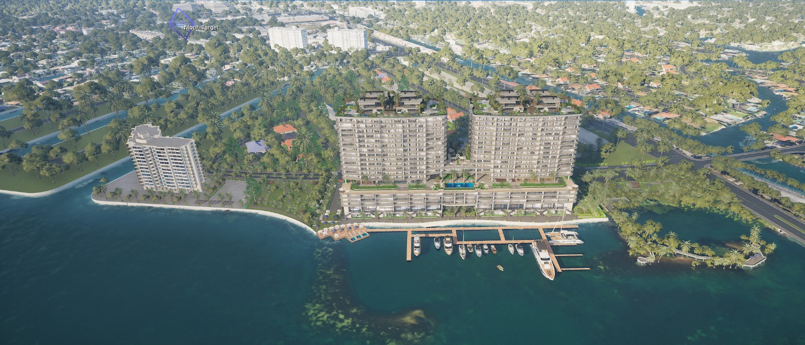

THE WATERFRONT, REIMAGINED
Discover Continuum 12000 through seven selected exterior views supplied by Kazeyami Innovations. Switch perspectives, zoom into the architecture, and explore different lighting moods.
This is an image-based preview, not a live Unreal session or a continuous 3D orbit. Lighting moods and environmental motion are visual treatments. Interior exploration is not part of this demo.